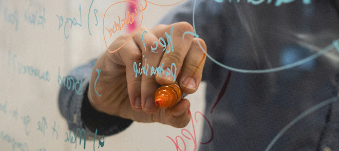
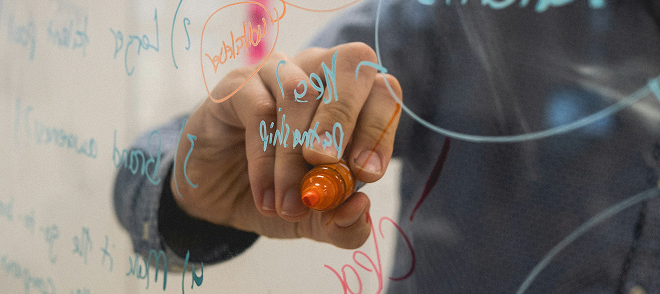

GARBONOMIX
EN

Our
services
Garbology- and sustainability based services.
Garbology- and sustainability based services.
Our garbology-based services provide free consultation sessions to analyze your consumption habits. Based on this analysis, we develop a tailored consumption plan designed to optimize your resources, transform your economy, and maximize savings for your household or business.
The final price will be determined during the initial free consultation session.
This service offers an online study of your
consumption routines to maximize your savings.
80 €
This service offers the study of your consumption
routines to maximize your savings by
collecting
your garbage bags in place.
130 €
This service offers the study of your small business (cafe, restaurants, etc.) consumption routines to maximize your savings by collecting your garbage bags in place.
+350 €
This service offers the study of landfills, accumulations of waste systems and industrial waste to create detailed databases and offer suggestions to improve the waste management systems.
+1800 €
The goal of these services is to improve the sustainability in houses and kitchens as well as
promote
sustainability-related topics in society
 

Sustainable Kitchens focus on studying large kitchens over time, assisting cooks and managers in making their consumption habits and menus more sustainable.
To help create a sustainable home, Garbonomix offers pre-plastic items such as vintage rugs, adding a timeless charm to your house or office while reducing plastic usage in your living and working spaces.
Omran Garazhian and Leila Papoli-Yazdi create mixed-media and digital art using discarded objects. To purchase cards and zines featuring this artwork, visit our shops.
In our online or in-person workshops, we provide audiences with insights into garbology method-ologies, sustainability practices, and environ-mental issues. To book our experts, please call us or send an email.
These services are offered to make the rugs more sustainable and durable.
Prices are exclusive of VAT.
+15€
11€ (for 1x1 m)
+40€ (for 1x1 m)
+52€ (for 1x1 m)